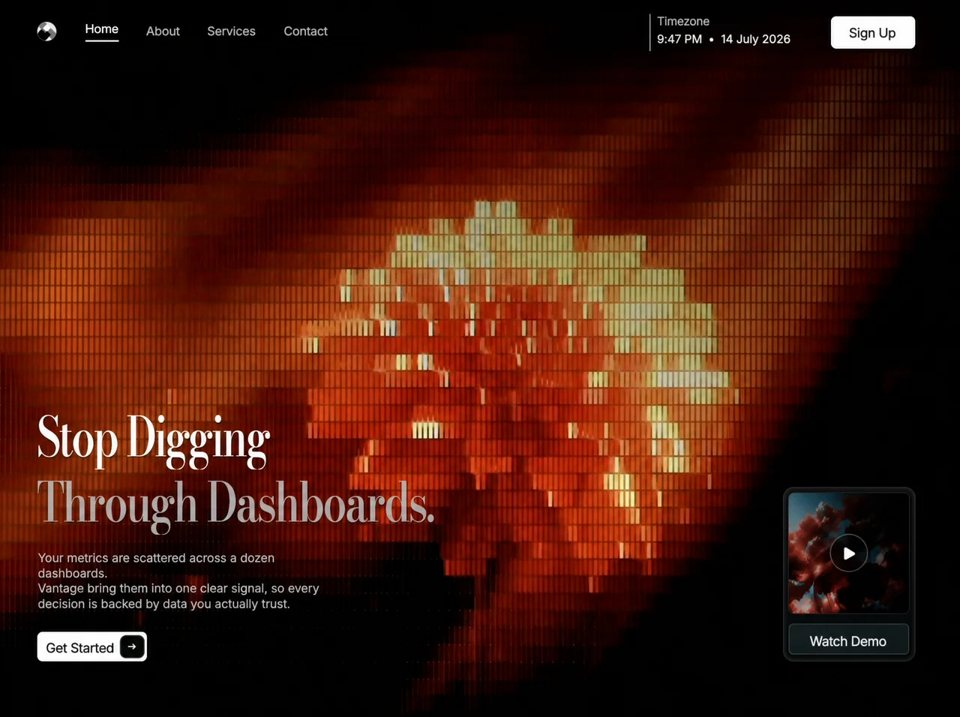

Data Signal
Analyticsanalyticsyilai-ai 公开页面
收录时间：2026-08-14正文：12,222 字符

本地预览图 · jpeg
完整提示词
Recreate this page **pixel-faithfully** as a single static `index.html` (inline CSS + JS, no framework). Match structure, copy, spacing tokens, glass, motion, fonts, and media exactly. Do not invent extra sections, stats, cards, or marketing blocks. Full-viewport dark landing only — no page scroll (`html, body { overflow: hidden; background: #000 }`).
## Product / brand
- Brand: **Vantage**
- Document title: `Stop Digging Through Dashboards`
- Theme color: `#000000`
- `color-scheme: dark`
- One composition: full-bleed cinematic background + left hero stack + bottom-right glass demo card. No inset hero media cards elsewhere.
## Exact background video (mandatory)
Full-bleed edge-to-edge background is a **`<video>`**, not an image:
```html
<video class="background" autoplay muted loop playsinline disablepictureinpicture aria-hidden="true">
<source src="https://d8j0ntlcm91z4.cloudfront.net/user_38xzZboKViGWJOttwIXH07lWA1P/hf_20260808_064556_051587f1-74a1-4336-8c05-4dde3594ed05.mp4" type="video/mp4">
</video>
```
CSS for `.background`:
- `position: absolute; inset: 0; z-index: -3; width/height: 100%; object-fit: cover; object-position: center; pointer-events: none; user-select: none`
Over video, add `.screen::before` vignette at `z-index: -2`:
```css
background:
linear-gradient(180deg, rgba(0,0,0,.03), transparent 24%, transparent 82%, rgba(0,0,0,.05)),
radial-gradient(ellipse at 44% 54%, transparent 30%, rgba(0,0,0,.055) 100%);
```
## Fonts (exact)
Embed / use these two variable fonts (not Inter/Roboto/system UI):
1. **Reference Sans** — `font-weight: 100 900` — default UI / body / nav / buttons
2. **Reference Display** — `font-weight: 400 900` — **headline only**
`:root { font-family: "Reference Sans", Arial, sans-serif; }`
**Headline (`.hero-title`)**:
- `font-family: "Reference Display", "Reference Sans", Arial, sans-serif`
- **`font-weight: 500` (medium)** — not bold, not semibold
- `font-optical-sizing: auto`
- `letter-spacing: -2.1px`
- `-webkit-text-stroke: .12px currentColor`
- `white-space: nowrap`
- `text-shadow: 0 2px 2px rgba(0,0,0,.44)`
Do **not** use Playfair Display.
## Exact copy (preserve wording, including grammar)
Headline (two lines):
1. `Stop Digging` — color `#fff`, `transform: scaleX(.775)` on `.line-one`
2. `Through Dashboards.` — color `rgba(211, 207, 207, .78)`, `transform: scaleX(.793)` on `.line-two`
Each line wrapped: `<span class="line line-one|line-two"><span class="line-reveal">…</span></span>` with `transform-origin: left center` on `.line`.
Body copy (exact, including “bring” not “brings”, and the three line breaks):
```
Your metrics are scattered across a dozen dashboards.<br>
Vantage bring them into one clear signal, so every<br>
decision is backed by data you actually trust.
```
- Color `rgba(226, 229, 228, .84)`
- `font-weight: 350`, `letter-spacing: .13px`
- width `clamp(390px, 31.67vw, 500px)`, `left: 1px`
- `text-shadow: 0 1px 3px rgba(0,0,0,.7)`
Buttons / chrome text:
- Nav: `Home` (active), `About`, `Services`, `Contact`
- Time panel label: `Timezone`
- Time panel value: `9:47 PM • 14 July 2026` (static string)
- Header CTA: `Sign Up`
- Primary CTA: `Get Started`
- Demo card: `Watch Demo` + play control `aria-label="Play demo"`
## Layout architecture
Fixed `.viewport` (`inset: 0; isolation: isolate; background: #000`). Inside: `.screen` centered with `left/top: 50%; transform: translate(-50%,-50%); width/height: 100%; background: #000`.
### Desktop CSS variables on `.screen` (exact)
```css
--gutter-start: clamp(36px, 4.177vw, 96px);
--gutter-end: clamp(36px, 4.04vw, 96px);
--header-top: clamp(20px, 2.264vh, 30px);
--hero-bottom: clamp(34px, 5.19vh, 64px);
--display-size: clamp(58px, 7.64vh, 88px);
--display-leading: clamp(72px, 9.34vh, 106px);
--copy-size: clamp(14px, 1.70vh, 19px);
--copy-leading: clamp(19px, 2.17vh, 24px);
--title-copy-gap: clamp(15px, 2.08vh, 24px);
--copy-cta-gap: clamp(24px, 3.11vh, 36px);
--cta-width: clamp(142px, 15.09vh, 168px);
--cta-height: clamp(38px, 3.96vh, 44px);
--compact-control-font-size: clamp(17px, 1.75vh, 19px);
--action-control-font-size: clamp(17px, 1.78vh, 19.5px);
--primary-control-font-size: clamp(17px, 1.77vh, 19.25px);
--control-inline-nudge: -1px;
--control-baseline-shift: clamp(1px, .19vh, 2px);
--copy-optical-shift: clamp(0px, .1vh, 1px);
--watch-baseline-shift: clamp(2px, .38vh, 4px);
--card-width: clamp(150px, 18.96vh, 215px);
```
### Header (top bar)
Absolute: `inset: var(--header-top) var(--gutter-end) auto var(--gutter-start); height: 48px; display: flex; align-items: flex-start; white-space: nowrap`.
1. **Brand** — 25×25 SVG disc logo (clipPath circle), light face with angular diamond shards (`#ededed` ground, `#050606` / `#737778` / `#fafafa` / `#0a0b0b` paths). `top: 10px`, drop-shadow `0 1px 2px rgba(0,0,0,.3)`. `aria-label="Vantage home"`.
2. **Nav** — `margin-left: clamp(36px, 3.03vw, 48px); gap: clamp(32px, 2.9vw, 43px); top: 9px`. Links: `font-size: 16px; font-weight: 430; letter-spacing: -.36px; color: rgba(229,229,230,.77); text-shadow: 0 1px 3px rgba(0,0,0,.55)`. Active: `#fff` + underline `::after` width `44px`, height `2px`, `background: rgba(255,255,255,.82)`. First link `top: -3px`; fourth `margin-left: 1px`.
3. **Time panel** — `margin-left: auto; width: 211px; height: 48px; padding-left: 8px; border-left: 2px solid rgba(230,230,230,.52)`. Label `15px / weight 420 / rgba(240,240,240,.77)`. Value `15px / weight 440 / rgba(255,255,255,.93)`.
4. **Sign Up** — white pill button `109×42`, `border-radius: 7px`, `background: #fff`, `color: #101010`, `font-weight: 460`, `letter-spacing: -.34px`, shadows `inset 0 1px 0 rgba(255,255,255,.72)` + `0 1px 5px rgba(0,0,0,.34)`, `margin-left: clamp(20px, 1.95vw, 29px)`.
5. **Menu toggle** — `display: none` on desktop; shown only in tablet/mobile breakpoints. Two-line hamburger SVG; morphs to X when `.header.menu-open`.
### Hero (bottom-left)
`.hero-content`: `position: absolute; left: var(--gutter-start); bottom: var(--hero-bottom); flex-column; align-items: flex-start`.
**Primary CTA** (white, not glass):
- size from `--cta-width` / `--cta-height`, `border-radius: 7px`, `background: #fff`, `color: #111`, `box-shadow: 0 1px 5px rgba(0,0,0,.38)`
- Label absolute at `left: 8.125%`, `font-weight: 450`, `letter-spacing: -.3px`
- Dark arrow box absolute `right: 3.125%; top: 14.286%; width: 20.625%; height: 71.429%; border-radius: 7px; background: #070909` with white stroke arrow SVG 14×14
### Demo card (bottom-right) — glass
`.demo-card` absolute `right: var(--gutter-end); bottom: var(--hero-bottom); width: var(--card-width); aspect-ratio: 201 / 265; container-type: inline-size`
Glass look (exact):
```css
border: 1px solid rgba(255,255,255,.13);
border-radius: clamp(12px, 1.52vh, 18px);
background: linear-gradient(145deg, rgba(24,22,20,.80), rgba(5,12,14,.86));
box-shadow:
0 2px 10px rgba(0,0,0,.44),
0 0 0 3px rgba(255,255,255,.035) inset,
0 0 0 1px rgba(0,0,0,.9);
backdrop-filter: blur(14px) saturate(108%);
```
Inside:
- `.demo-visual` square thumbnail area using `cqw` units (`left/top 3.5/4 cqw`, `92.5×92 cqw`, `border-radius: 4cqw`, bg `#101a1e`)
- Image: abstract red/blue smoke thumbnail (`alt="Abstract red and blue smoke"`), filter `brightness(.89) saturate(.93) contrast(1.03)` — use local `assets/watch-demo-thumbnail.png` or equivalent embedded asset
- Circular glass play button centered: `29cqw`, `border: 1px solid rgba(255,255,255,.34)`, `background: rgba(3,5,7,.47)`, `backdrop-filter: blur(4px)`, white play triangle SVG
- `.watch-button` full-width under visual: glass gradient `linear-gradient(145deg, rgba(26,34,36,.86), rgba(16,29,33,.9))`, border `rgba(255,255,255,.21)`, `font-weight: 430`, label `Watch Demo`
## Glass language (reuse consistently)
Dark translucent panels with:
- subtle white borders `~rgba(255,255,255,.13–.21)`
- dark teal/charcoal linear gradients ~145deg
- inset hairline highlights
- `backdrop-filter: blur(14–18px) saturate(108–110%)`
Used on: demo card, watch button, play button, tablet/mobile menu panel, menu toggle.
## Entrance motion (exact choreography)
On load (unless `prefers-reduced-motion: reduce`):
1. Head script immediately adds `motion-pending` to `<html>` and sets a **3500ms** fallback timeout to remove it.
2. While `.motion-pending`: header/nav/time/sign-up/copy/cta/card start `opacity: 0`; title lines clip with overflow hidden; `.line-reveal` starts at `translate3d(0,110%,0) skewY(2deg)`; copy/cta/card have slight downward + scale offsets.
3. Animations (easing / duration / delay):
| Element | Keyframes | Duration | Easing | Delay |
|---|---|---|---|---|
| brand | entrance-brand (fade + up 7px + scale .94→1) | 580ms | `cubic-bezier(.16,1,.3,1)` | 60ms |
| nav links | entrance-nav (fade + up 6px) | 480ms | same | 130 / 175 / 220 / 265ms |
| time panel | entrance-nav | 520ms | same | 180ms |
| sign up | entrance-action (fade + up 8px + scale .985) | 520ms | same | 220ms |
| menu toggle | entrance-action | 520ms | same | 140ms |
| title line 1 | entrance-line (110% + skewY 2° → 0) | 800ms | `cubic-bezier(.22,1,.36,1)` | 300ms |
| title line 2 | entrance-line | 850ms | same | 440ms |
| hero copy | entrance-copy | 620ms | `.16,1,.3,1` | 740ms |
| primary CTA | entrance-action | 560ms | same | 960ms |
| demo card | entrance-card (up 12px + scale .968, origin 82% 50%) | 920ms | `.22,1,.36,1` | **1040ms** |
4. On `.demo-card` `animationend`, remove `motion-pending` and clear fallback timeout.
5. Hover (if motion OK): `button, a { transition: filter/opacity 140ms }` → hover `filter: brightness(1.08)`.
6. Focus-visible: `outline: 2px solid #fff; outline-offset: 3px`.
## Responsive behavior (must match)
### Tablet
`@media (min-width: 620px) and (max-width: 790px), (min-width: 620px) and (max-width: 1100px) and (orientation: portrait)`:
- Collapse nav/time/sign-up into glass dropdown panel under hamburger (`#tablet-navigation`), closed by default (`opacity 0; visibility hidden; transform translateY(-8px) scale(.985)`), open via `.header.menu-open`.
- Menu toggle glass button 46×46, `border-radius: 11px`, `backdrop-filter: blur(14px)`.
- Dropdown: `blur(18px)`, `border-radius: 16px`, width `min(324px, calc(100vw - 2*gutter))`.
- JS: toggle `aria-expanded`, set `inert` on nav when closed (when toggle visible), Escape / outside pointer / link click closes; focus first link on open.
### Mobile
`@media (max-width: 619px)`: similar hamburger glass menu (`min(340px, …)`), hero bottom-anchored with `--mobile-gutter` / safe-area insets, tighter title scales (`scaleX(.78)` / `.55`), hide `<br>` in copy (`display:none`), demo card moves to upper-right (`top: clamp(176px, 32svh, 300px)`). Additional short-height and landscape-mobile overrides as in source.
## DOM skeleton (exact hierarchy)
```
main.viewport
section.screen#screen
video.background > source[CloudFront mp4 above]
header.header
a.brand > svg logo
div.header-actions#tablet-navigation
nav.nav > Home/About/Services/Contact
div.time-panel > label + value
button.sign-up
button.menu-toggle
section.hero
div.hero-content
h1.hero-title > two .line > .line-reveal spans
p.hero-copy
button.primary-cta > .label + .arrow-box
article.demo-card
div.demo-visual > img + button.play
button.watch-button
```
## Non-negotiables
- Use the **exact CloudFront MP4 URL** above for the background video.
- Headline font = **Reference Display at weight 500**.
- UI font = **Reference Sans** with the fractional weights listed (430/420/440/460/450/350 etc.).
- Glass demo card bottom-right; white primary CTA bottom-left under copy.
- One-shot entrance timeline with the delays/easings above.
- No scroll, no extra sections, no purple gradients, no Inter.
- Preserve static timezone string and the copy typo “Vantage bring”.
Implement as a polished production-ready single HTML file that looks identical to this Vantage landing page.把上面的提示词完整复制到支持长文本的 AI 工具中，再按需要替换品牌名、配色与文案。提示词描述的是整页结构与动效节奏，生成后建议在真实浏览器里检查首屏加载和移动端表现。
来源与版权
该条目来自公开提示词页面，原始出处信息未随页面提供。
提示词文本与预览素材的版权归原作者或原平台所有，本站仅作索引与归档。若你是权利人并希望移除本条内容，请通过联系方式告知。
同分类提示词
暂无同分类条目。